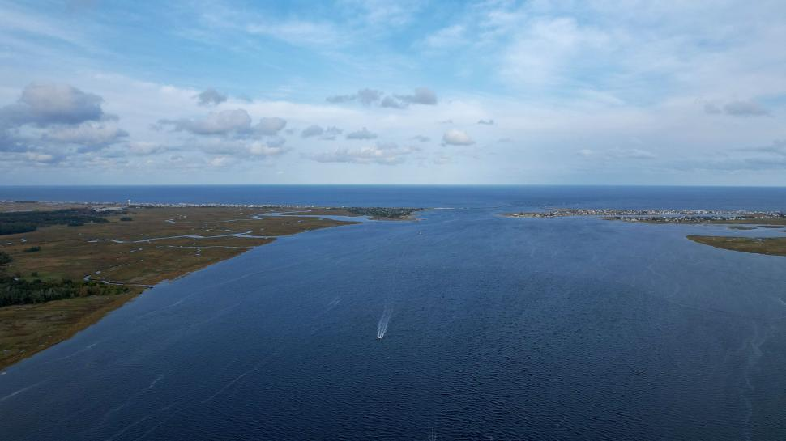
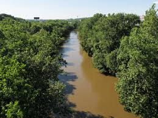
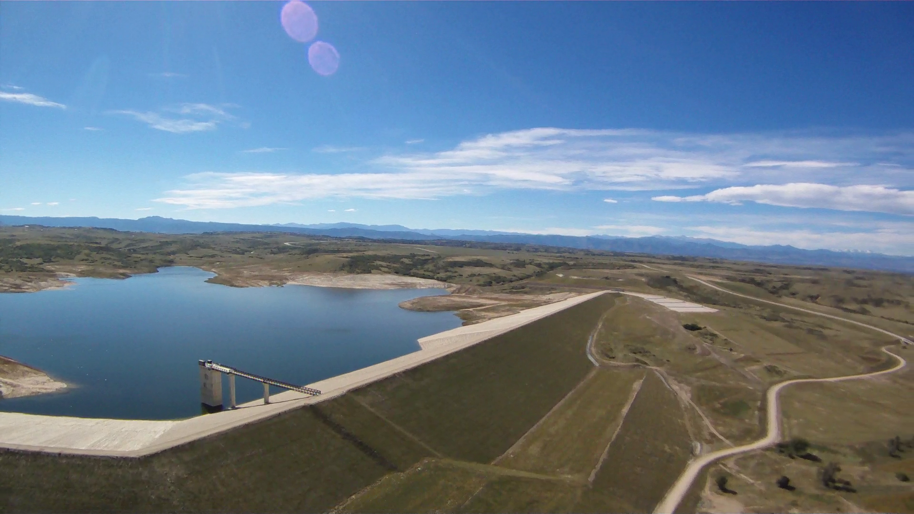

.jpeg) From: Public Domain Pictures
From: Public Domain Pictures
If you are fishing a big or small lake look for shotouts from the actual lakes and fish it and if those dont work fish coves then last hope middle of the lake. When you are fishing look for cover for fish to hide they love it.

From: Freerange StockFor ponds hit cattails and structers like the lake.Look for the shotouts and coves if there is a creek or island hit up that fish love it becasue of the bait fish. From: Public Domain Pictures
For a rivers hitting rocks or the shotouts or coves and if there is structer hit it.In a river the banks hold little fish that bass like to eat so my favorit is when the wind pushes bait in to a corner the thats my favorit becasue bass love little bait.

Creator: Tim Kiser From: WikipediaResovores are a graet place to fish because they usally have a ton of structer and coves.If there is a big dam fish the drop of on it the fish love it and sit and wait for bait fish to pass by if it is a windy and the wind is pushing in to a shot off the bait will be pushed there and bass folow them.

From: Wikimedia CommonsAll in all there is many places to fish but usally you will be looking for the same thing that hold fish.